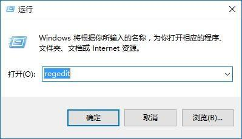
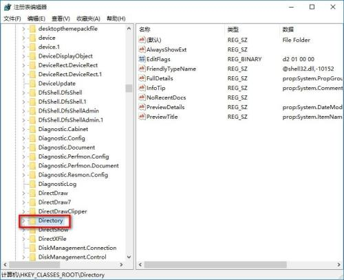
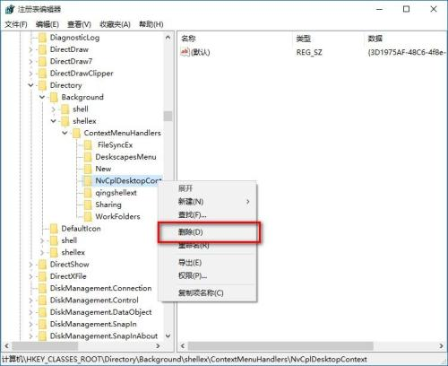

<!DOCTYPE html>
<html>
<head><meta name="generator" content="Hexo 3.9.0">
  <meta charset="utf-8">
  

  
  <title>Win10恢复出厂设置后鼠标一直转圈圈解决方案 | 义修经验总结 - 计算机协会</title>
  <meta name="viewport" content="width=device-width, initial-scale=1, maximum-scale=1">
  <meta name="description" content="Windows 10恢复出厂设置后鼠标点右键一直转圈圈，很久才有反应。本文作者：网络本文编辑：梅健 林志杨">
<meta name="keywords" content="系统问题">
<meta property="og:type" content="article">
<meta property="og:title" content="Win10恢复出厂设置后鼠标一直转圈圈解决方案">
<meta property="og:url" content="http://article.cqjtuJX.club/2019/08/31/Win10恢复出厂设置后鼠标一直转圈圈解决方案/index.html">
<meta property="og:site_name" content="义修经验总结 - 计算机协会">
<meta property="og:description" content="Windows 10恢复出厂设置后鼠标点右键一直转圈圈，很久才有反应。本文作者：网络本文编辑：梅健 林志杨">
<meta property="og:locale" content="zh-cn">
<meta property="og:image" content="http://article.cqjtujx.club/2019/08/31/Win10恢复出厂设置后鼠标一直转圈圈解决方案/1.png">
<meta property="og:image" content="http://article.cqjtujx.club/2019/08/31/Win10恢复出厂设置后鼠标一直转圈圈解决方案/2.png">
<meta property="og:image" content="http://article.cqjtujx.club/2019/08/31/Win10恢复出厂设置后鼠标一直转圈圈解决方案/3.png">
<meta property="og:updated_time" content="2019-08-31T03:40:58.606Z">
<meta name="twitter:card" content="summary">
<meta name="twitter:title" content="Win10恢复出厂设置后鼠标一直转圈圈解决方案">
<meta name="twitter:description" content="Windows 10恢复出厂设置后鼠标点右键一直转圈圈，很久才有反应。本文作者：网络本文编辑：梅健 林志杨">
<meta name="twitter:image" content="http://article.cqjtujx.club/2019/08/31/Win10恢复出厂设置后鼠标一直转圈圈解决方案/1.png">
  
    <link rel="alternate" href="/atom.xml" title="义修经验总结 - 计算机协会" type="application/atom+xml">
  
  
    <link rel="icon" href="/favicon.png">
  
  
    <link href="//fonts.lug.ustc.edu.cn/css?family=Source+Code+Pro" rel="stylesheet" type="text/css">
  
  <link rel="stylesheet" href="/css/style.css">
</head>
</html>
<body>
  <div id="container">
    <div id="wrap">
      <header id="header">
  <div id="banner"></div>
  <div id="header-outer" class="outer">
    <div id="header-title" class="inner">
      <h1 id="logo-wrap">
        <a href="/" id="logo">义修经验总结 - 计算机协会</a>
      </h1>
      
        <h2 id="subtitle-wrap">
          <a href="/" id="subtitle">重庆交通大学 - 计算机协会</a>
        </h2>
      
    </div>
    <div id="header-inner" class="inner">
      <nav id="main-nav">
        <a id="main-nav-toggle" class="nav-icon"></a>
        
          <a class="main-nav-link" href="/">Home</a>
        
          <a class="main-nav-link" href="/archives">Archives</a>
        
      </nav>
      <nav id="sub-nav">
        
          <a id="nav-rss-link" class="nav-icon" href="/atom.xml" title="RSS Feed"></a>
        
        <a id="nav-search-btn" class="nav-icon" title="Search"></a>
      </nav>
      <div id="search-form-wrap">
        <form action="//google.com/search" method="get" accept-charset="UTF-8" class="search-form"><input type="search" name="q" class="search-form-input" placeholder="Search"><button type="submit" class="search-form-submit">&#xF002;</button><input type="hidden" name="sitesearch" value="http://article.cqjtuJX.club"></form>
      </div>
    </div>
  </div>
</header>
      <div class="outer">
        <section id="main"><article id="post-Win10恢复出厂设置后鼠标一直转圈圈解决方案" class="article article-type-post" itemscope itemprop="blogPost">
  <div class="article-meta">
    <a href="/2019/08/31/Win10恢复出厂设置后鼠标一直转圈圈解决方案/" class="article-date">
  <time datetime="2019-08-31T03:11:12.000Z" itemprop="datePublished">2019-08-31</time>
</a>
    
  </div>
  <div class="article-inner">
    
    
      <header class="article-header">
        
  
    <h1 class="article-title" itemprop="name">
      Win10恢复出厂设置后鼠标一直转圈圈解决方案
    </h1>
  

      </header>
    
    <div class="article-entry" itemprop="articleBody">
      
        <p>Windows 10恢复出厂设置后鼠标点右键一直转圈圈，很久才有反应。<br>本文作者：网络<br>本文编辑：梅健 林志杨</p>
<a id="more"></a>
<hr>

<ol>
<li>按下键盘组合键“<strong>Win+R</strong>”（即同时按下键盘上的“<strong>视窗键</strong>”和字母“<strong>R</strong>”键）启动<strong>运行</strong>，输入“<strong>regedit</strong>”，点击<strong>确定</strong>。</li>
</ol>
<p></p>
<ol start="2">
<li>进入注册表编辑器，然后点开“<strong>HKEY_CLASSES_ROOT</strong>”，找到“<strong>HKEY_CLASSES_ROOT\Directory</strong>”</li>
</ol>
<p></p>
<ol start="3">
<li>双击展开文件夹，直到找到“<strong>HKEY_CLASSES_ROOT\Directory\BackgroundShellex\ContextMenuHandlers</strong>”。最后删除<strong>ContextMenuHandlers</strong>中除了<strong>new</strong>以外的文件夹。</li>
</ol>
<p></p>
<ol start="4">
<li>有可能除了<strong>new</strong>还会有一个文件夹删除不了，不过没关系，试试右键桌面看看速度如何，还不行的话重启后就行了。</li>
</ol>
<hr>

<p><a href="https://github.com/cqjtu-acm/article/issues" target="_blank" rel="noopener">文章纠错</a> | 看不懂 | 投稿 | 提建议：477897024 (QQ群)</p>

      
    </div>
    <footer class="article-footer">
      <a data-url="http://article.cqjtuJX.club/2019/08/31/Win10恢复出厂设置后鼠标一直转圈圈解决方案/" data-id="cjzz01zpc00053gwhp1hqjy0x" class="article-share-link">Share</a>
      
      
  <ul class="article-tag-list"><li class="article-tag-list-item"><a class="article-tag-list-link" href="/tags/系统问题/">系统问题</a></li></ul>

    </footer>
  </div>
  
    
<nav id="article-nav">
  
    <a href="/2019/08/31/Adobe-Premiere-CC-2019-下载地址/" id="article-nav-newer" class="article-nav-link-wrap">
      <strong class="article-nav-caption">Newer</strong>
      <div class="article-nav-title">
        
          Adobe Premiere Pro CC 2019 下载地址
        
      </div>
    </a>
  
  
    <a href="/2019/08/30/Matlab-2014-安装教程/" id="article-nav-older" class="article-nav-link-wrap">
      <strong class="article-nav-caption">Older</strong>
      <div class="article-nav-title">Matlab R2014a 安装教程</div>
    </a>
  
</nav>

  
</article>

</section>
        
          <aside id="sidebar">
  
    

  
    
  <div class="widget-wrap">
    <h3 class="widget-title">Tags</h3>
    <div class="widget">
      <ul class="tag-list"><li class="tag-list-item"><a class="tag-list-link" href="/tags/系统问题/">系统问题</a></li><li class="tag-list-item"><a class="tag-list-link" href="/tags/软件安装/">软件安装</a></li></ul>
    </div>
  </div>


  
    
  <div class="widget-wrap">
    <h3 class="widget-title">Tag Cloud</h3>
    <div class="widget tagcloud">
      <a href="/tags/系统问题/" style="font-size: 10px;">系统问题</a> <a href="/tags/软件安装/" style="font-size: 20px;">软件安装</a>
    </div>
  </div>

  
    
  <div class="widget-wrap">
    <h3 class="widget-title">Archives</h3>
    <div class="widget">
      <ul class="archive-list"><li class="archive-list-item"><a class="archive-list-link" href="/archives/2019/08/">八月 2019</a></li></ul>
    </div>
  </div>


  
    
  <div class="widget-wrap">
    <h3 class="widget-title">Recent Posts</h3>
    <div class="widget">
      <ul>
        
          <li>
            <a href="/2019/08/31/Adobe-Premiere-CC-2019-下载地址/">Adobe Premiere Pro CC 2019 下载地址</a>
          </li>
        
          <li>
            <a href="/2019/08/31/Win10恢复出厂设置后鼠标一直转圈圈解决方案/">Win10恢复出厂设置后鼠标一直转圈圈解决方案</a>
          </li>
        
          <li>
            <a href="/2019/08/30/Matlab-2014-安装教程/">Matlab R2014a 安装教程</a>
          </li>
        
          <li>
            <a href="/2019/08/30/重新安装Office家庭学生版/">重新安装Office家庭学生版</a>
          </li>
        
          <li>
            <a href="/2019/08/30/VC-6-0安装教程/">VC++6.0安装教程</a>
          </li>
        
      </ul>
    </div>
  </div>

  
</aside>
        
      </div>
      <footer id="footer">
  
  <div class="outer">
    <div id="footer-info" class="inner">
      &copy; 2019 计算机协会<br>
      Powered by <a href="http://hexo.io/" target="_blank">Hexo</a>
    </div>
  </div>
</footer>
    </div>
    <nav id="mobile-nav">
  
    <a href="/" class="mobile-nav-link">Home</a>
  
    <a href="/archives" class="mobile-nav-link">Archives</a>
  
</nav>
    

<script src="https://cdn.bootcss.com/jquery/2.0.3/jquery.min.js"></script>


  <link rel="stylesheet" href="/fancybox/jquery.fancybox.css">
  <script src="/fancybox/jquery.fancybox.pack.js"></script>


<script src="/js/script.js"></script>


  </div>
</body>
</html>